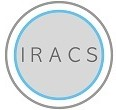

Research Assistant
- Worked with Prof. Uttama Lahiri Researched on developing an interactive, real time
exercise guidance and rehabilitation platform based on pose estimation, which accurately records and matches body
joints for trainer and patient movements, without being affected by position, rotation and size of the subjects relative
to the camera.